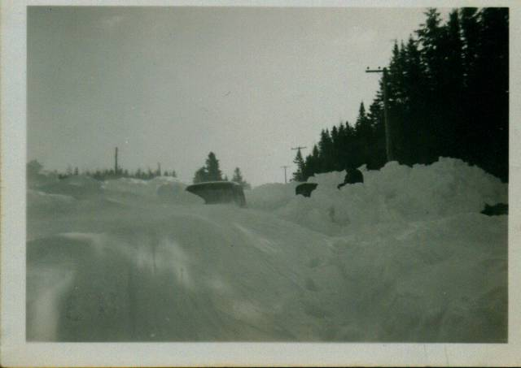
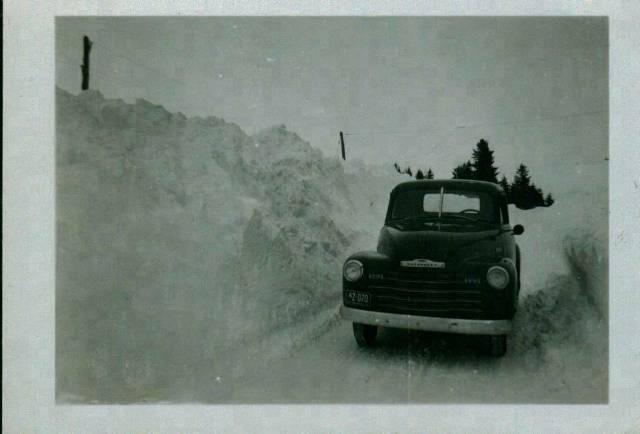

The Family Chronicle
No. 64 March 4, 2004
________________

Harold MacDonald’s Truck – Feb. 1952

Norman’s truck – 1952, probably in March
The Maritimes, especially Nova Scotia and Prince Edward Island, have been inundated with snow in recent weeks. I am reminded of similar winters in the Miramichi when I was a youngster.
Before the advent of snow ploughs, after a winter storm, the men of the community would hitch their horses to sleds and break the road. Breaking the road meant putting a
first track through the deep snow. One team would make a track through the snow for a ways then another team would take a turn. If the roads were badly drifted, sometimes a track would be made through the woods at the edge of the road. A couple of the worst spots for snow were “Ken’s Hill” and at the Middle Black River School. Because roads were often below the level of the fields, the “gut” would drift full. The other common problem was when several storms with high winds occurred close together and the road drifted full each time after it was ploughed.
As roads were rebuilt, ditches were deepened, road surfaces were raised so snow would blow off, wooden fences were removed or replaced to reduce the build up of snow and snow fences were erected in fields parallel to the road to catch the snow
Later years also brought better snow removal equipment. The earliest I remember were the road graders and the crawler tractors. The crawler tractors could turn sideways on the road and push the snow well off the road. By the winter of 1952, there was at least one snow blower available at the Government garage in Chatham. Today heavy trucks are on the road early and often so keep the roads clear. Their speed also allows them to hurl the snow well back across the ditches.
The grader type plow was very efficient if the snow was not too heavy. When the snow was really heavy, however, the plow could not make a very wide track and often the snow would fall back again behind the blade trapping the plow. Sometimes the drifted snow would be very hard and the plow would have to back up a number of times and take a run at the heavy snow.
The month of February 1952 was especially snowy. I was teaching at the Miramichi Rural at the time. February normally has 20 teaching days but that year; school was closed for 10 of them. (As an aside, King George VI died on February 6, 1952)
One morning, I think that it was a Tuesday, Harold MacDonald started for work about 6:00 or so. It was snowing and drifting; he got stuck half way down “Ken’s Hill.” He walked back to our place and Norman hitched the team and went over to haul him out. Norman couldn’t get the team past the truck because the road was too narrow and he couldn’t pull him backwards.
It snowed and drifted all day. When the snow stopped next morning, Harold’s truck was completely covered except for the aerial and top of the cab. Harold shoveled out his truck on Wednesday but couldn’t move it. Nothing moved that day but on Thursday, we got word that the plow from down river was working its way toward Chatham. Just before suppertime, the plow passed the Little Branch School and shortly thereafter it disappeared around Finno’s turn – but it could not break through down the hill.
I remember taking a round-mouthed shovel and joining other men from the community over at “Ken’s hill” along where Harold’s truck was buried. We would loosen the hard, packed snow with our shovels then the plow would back up the hill and take a run at the bank. It gained some ground but when it came to a dead stop, the plow would back up again. In the meantime we would loosen more snow.
I went home about 9 pm. As I recall, the plow finally broke through about midnight and, in fact, was met at Frank MacLean’s lane by another plough coming from Chatham.
The photos on the previous page shows Harold’s truck buried in the snow. The photo of Norman’s truck was taken about the same spot a few days later.
On a number of occasions school buses could not make their way through the snow and students were storm-stayed for a night or two at our place and other homes in the neighbourhood.
While earlier paragraphs describe an abundance of snow, it seems to me that there were occasions when the Little Branch Bridge had to be snowed. Presumably because the bridge was covered, “snowing” was necessary to put snow on the floor of the bridge when heavily laden sleds were being taken through. Whether this was a regular or occasional requirement, I do not know. Was someone paid to snow the bridge on a regular basis?
Space in this issue does not allow me to tell about shoveling out our lane, barn doors and the yard. Perhaps it will find its way into a later issue.
The Chronicle is an occasional newsletter published by Don Glendenning It is designed to share information about my family, community and the times in which I grew up. While every effort is made to be accurate, errors are likely to occur. Comments, enquiries and information may be sent to 62 Queen Elizabeth Drive, Charlottetown, PEI, C1A 3A9. Tel: 902-892-5859 Email: don@glendenning.net Web: www.glendenning.net